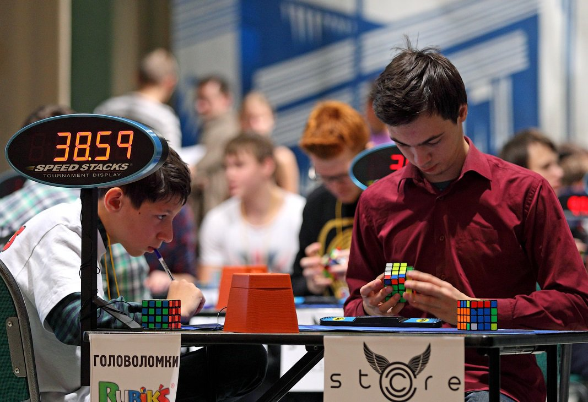

Твой Кубик
 Кубик Рубика – это своего рода механическая головоломка, которая приобрела особую популярность в мировом масштабе. Эту игрушку покупали и продолжают покупать, что просто удивительно. Она была названа по имени своего создателя. Популярен кубик не только у детей. Им крайне интересуется и взрослое поколение, особенно те личности, кто так и не разгадал его загадку.
Отличительная особенность данной игрушки заключается в том, что она приносит не только радость и удовольствие от процесса, но и массу пользы. К положительным аспектам стоит отнести развитие памяти, мелкой моторики рук, логики и пространственного воображения. Также он формирует у детей усидчивость и учит их стремиться к поставленной цели. Кроме всего прочего, данное хобби вполне может перерасти из разряда развлечений в дело всей жизни.
Кубик Рубика – это своего рода механическая головоломка, которая приобрела особую популярность в мировом масштабе. Эту игрушку покупали и продолжают покупать, что просто удивительно. Она была названа по имени своего создателя. Популярен кубик не только у детей. Им крайне интересуется и взрослое поколение, особенно те личности, кто так и не разгадал его загадку.
Отличительная особенность данной игрушки заключается в том, что она приносит не только радость и удовольствие от процесса, но и массу пользы. К положительным аспектам стоит отнести развитие памяти, мелкой моторики рук, логики и пространственного воображения. Также он формирует у детей усидчивость и учит их стремиться к поставленной цели. Кроме всего прочего, данное хобби вполне может перерасти из разряда развлечений в дело всей жизни.
Спидкубинг или сборка кубика Рубика на время, в настоящее время является крайне перспективным спортивным направлением. Благодаря такой головоломке человек становится более сообразительным и способным за оптимально короткий промежуток времени принимать верные решения. Победа в данном случае приносит просто неописуемый восторг и уверенность в собственных силах.